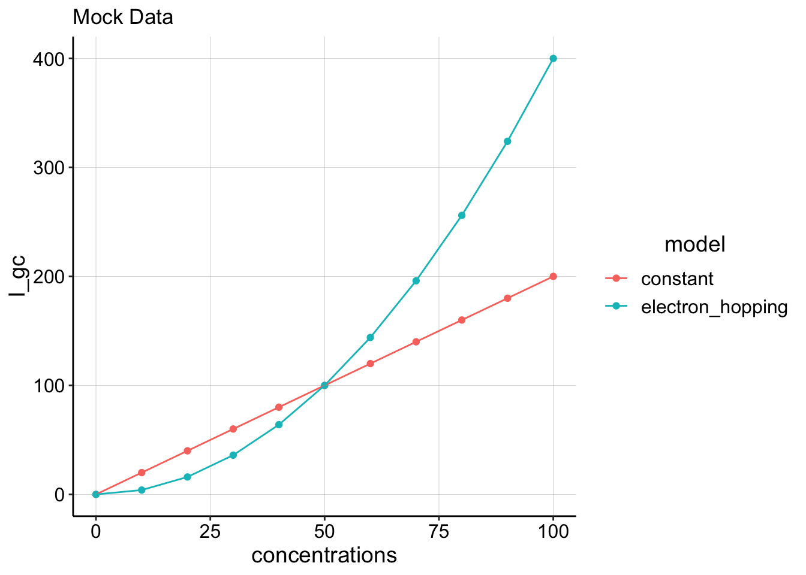

library(tidyverse)
library(cowplot)
library(broom)
library(modelr)
library(viridis)
library(lubridate)
library(knitr)
#knitr::opts_knit$set(root.dir = '/Users/scottsaunders/git/labwork/IDA/12_10_18')
knitr::opts_chunk$set(tidy.opts=list(width.cutoff=60),tidy=TRUE, echo = TRUE, message=FALSE, warning=FALSE, fig.align="center")
theme_1 <- function () {
theme_classic() %+replace%
theme(
axis.text = element_text( size=12),
axis.title=element_text(size=14),
strip.text = element_text(size = 14),
strip.background = element_rect(color='white'),
legend.title=element_text(size=14),
legend.text=element_text(size=12),
legend.text.align=0,
panel.grid.major = element_line(color='grey',size=0.1)
)
}
theme_set(theme_1())
#source("../../tools/echem_processing_tools.R")Our goal is to understand something about how PYO moves electrons through the biofilm. One way to think abou this electron transfer is how fast PYO effectively transports electrons through the biofilm. This concept can be expressed as the apparent diffusion coefficient. For the IDA, the peak current between the two electrodes is described by eq. 1.
\[I_{gc} = nFSCD_{ap} \tag{eq. 1}\] \(n,F,\text{and } S\) are constants (# of electrons per reaction, Faraday’s constant, and a geometric factor for the IDA). \(C\) is concentration and \(D_{ap}\) is the apparent diffusion coefficient.
Eq. 1 is equivalent to fick’s first law (eq. 2), describing an equilibrium flux driven by a concentration gradient. In this case the concentration gradient is between the two IDA electrodes, where we assume that (at peak current) all of the PYO is instantly reduced at the generator and oxidized at the collector.
\[J = -D \frac{dC}{dx} \tag{eq. 2}\] So, if we want to learn about \(D_{ap}\) it makes sense to vary concentration and monitor current, \(I_{gc}\). Lenny’s original idea was that if PYO mediated electron transfer was an “electron hopping” type mechanism as described for fixed redox molecules, then \(D_{ap}\) would not be a constant, but instead it would vary with concentration. If we were to plot \(I_{gc}\) vs. \(C\) we would expect a curved relationship if \(D_{ap}\) varied.
example_data <- tibble(concentrations = seq(0, 100, 10)) %>%
mutate(constant = concentrations * 2) %>% mutate(electron_hopping = concentrations *
0.04 * concentrations) %>% gather(key = model, value = I_gc,
constant, electron_hopping)
ggplot(example_data, aes(x = concentrations, y = I_gc, color = model)) +
geom_point() + geom_line() + labs(title = "Mock Data") So we tried to do the actual experiment by incubating an IDA biofilm with increasing concentrations of PYO. The earliest attempt at this was done by Matt with a WT biofilm. We switched to using a \(\Delta phz\) strain to get rid of any residual phenazine signal.
raw GC curves at different concentrations, with min max points
plot of soak vs concentration
plot of soak and blank vs concentration
It became clear that we had no idea if the signal was coming from the biofilm or the solution.
We can run these experiments, and quantify GC curves, but we need to try transferring the biofilm to a fresh reactor to be confident we are measuring biofilm associated PYO.